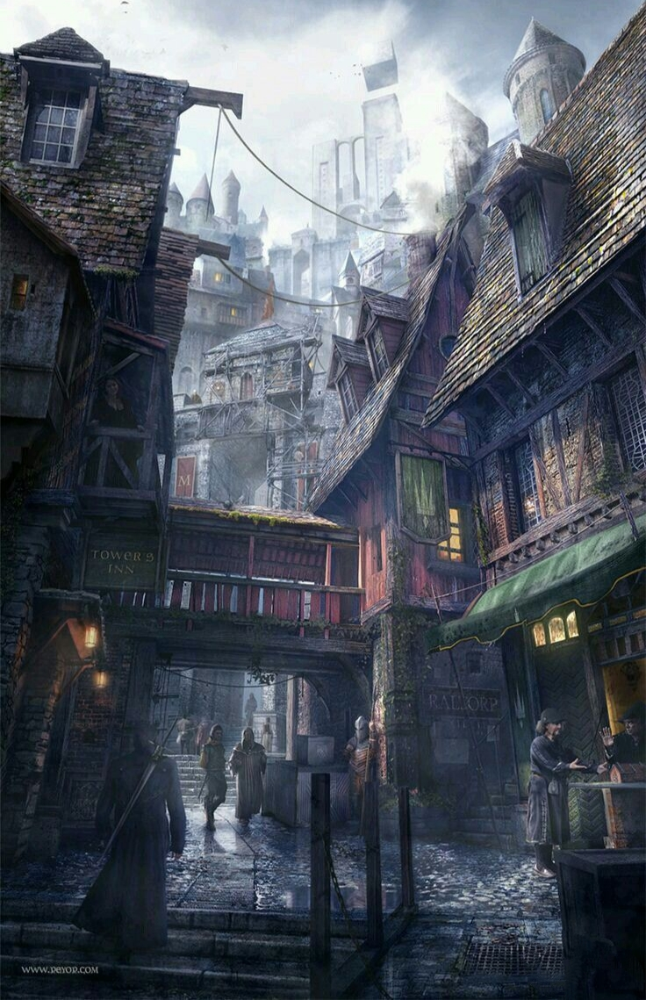
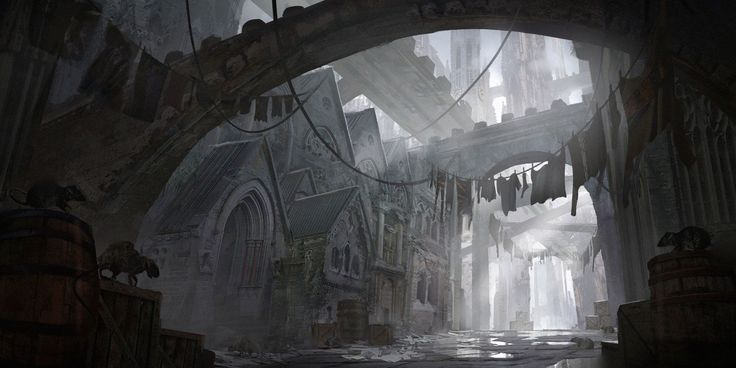
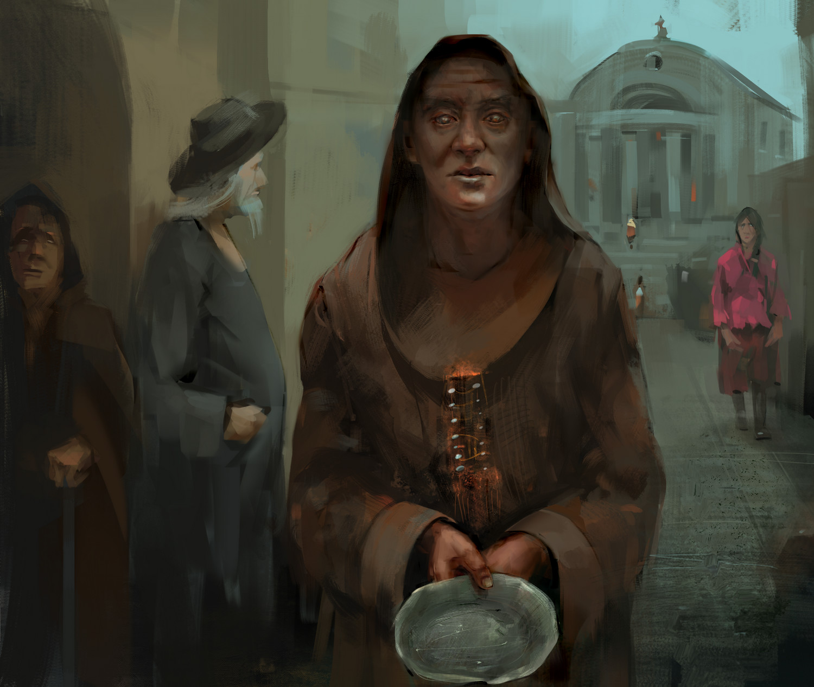

Окраины начинаются с плотных двух-трех этажных застроек, имеют свою инфраструктуру, магазины, таверны, ремесленные лавки, крохотных часовни, крупнейший рынок недалеко от портового района и даже площадь. Большая часть трущоб находится с восточной стороны столицы. Застроенные Окраины плавно перетекают в сельскую местность, небольшие избы, домики, фермы, сельско-хозяйственные предприятия / бараки и старые кабаки.
Окраины столицы

Добро пожаловать в окраины столицы!
У любого крупного замка есть прилегающие к нему земли которые снабжают его ресурсами. Окраины столицы Идрий как раз и являются этими самыми землями. Иначе их называют "Трущобы". Люди, имеющие более скромный бюджет или ремесло, селятся рядом со столицей и её стенами.
Внешний вид и устройство

Порядок

Тут частенько творится беззаконие ввиду малого наличия стражи и большого количества приезжих. Так же в трущобах отсутствует комендантский час для всех, кроме Тифлингов.
Жители

Здесь живёт простой народ, который платит налоги и часто устроивает праздники, фестивали. Ближе к сельской местности живут крестьяне, статуса как такового они не имеют, хоть и числятся в реестре граждан. Живут крестьяне исключительно на то что вырастили или продали, не имеют постоянной работы и платят дань.
Как говорил неизвестный фермер...
"А что нам до царей? У нас и своих проблем хватает"